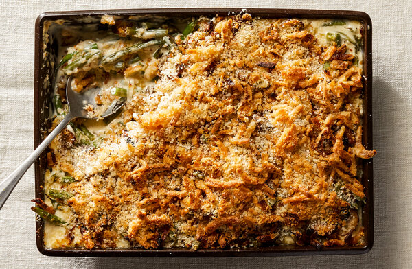

Green Bean Casserole

Description
This is a perfect dish for a gathering with family or friends on a special occasion, holiday, or a relaxing night! For years, this has been a crowd favorite for Thanksgiving and Christmas. This is an amazing dish that should not be missed!
List of Ingredients
- 2 cans (14.5oz each) of green beans, drained
- 1 can (10.5 oz) condensed cream of mushroom soup
- 1/2 cup milk
- 1 teaspoon soy sauce
- 1/2 teaspoon black pepper
- 1 1/3 cups (2.8 oz) French's fried onions
Instructions
Heat oven to 350 degrees F.
Mix condensed cream of mushroom soup, milk, soy sauce, and black pepper in a bowl or container until smooth and creamy.
Add the drained green beans into the mixture, stir until all the beans are coated evenly with the mixture.
Put the mixture into a casserole dish.
Bake for 20-25 minutes or until the casserole is heated through and bubbling.
Once removed, sprinkle about 2/3 cup of French's fried onions evenly over the top.
Return to the oven and bake for another 5 minutes.
Remove from the oven, and sprinkle the remaining fried onions over the top, and let cool before serving!